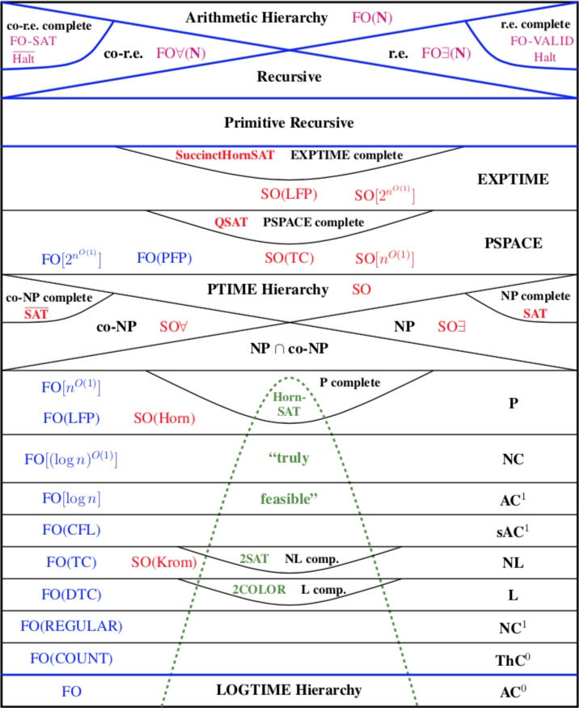

- Coordinates
- A slot (Mon 8-8.50 am, Tue 12-12.50 pm, Thu 11-11.50 am, Fri 10-10.50 am)
- Online on Google Meet
- Objectives
- This course builds on the topics covered in CS2200 - Languages, Machines and Computation as we delve deeper into computability theory and complexity theory. The aim of the course is to introduce the rich structural theory of computability and complexity. This course is a starting point for more advanced courses in theoretical computer science. In particular, this course is a strict pre-requisite for CS6840 - Modern Complexity Theory offered in the even semesters.
- Contents
- The following is a brief overview of the topics that will be covered in this course. The order of the topics covered may vary.
- Computability theory - Turing machines, undecidability, Arithmetic and analytical hierarchy, Recursion theorem, Incompleteness theorem.
- Complexity theory - Time complexity, Space complexity, Hierarchy theorems, Randomized complexity and interactive proofs, Counting complexity. The following picture (from the cover of Neil Immerman's monograph "Descriptive complexity") describes the world of computability and complexity that we will explore in more detail in this course.
 - References
- [K1]: Automata and Computability - Dexter C. Kozen.
- [K2]: Theory of Computation - Dexter C. Kozen.
- [AB]: Computational Complexity: A Modern Approach - Sanjeev Arora and Boaz Barak.
- Grading policy
-
- Assignments: 40%
- Scribing: 10%
- Course reading: 10%
- Mid-sem/viva: 10%
- End-sem exam/viva: 30%
- Important dates
-
- Problem Sets: Sep 18, Oct 2, Oct 16, Oct 30, Nov 13, Nov 27, Dec 11(optional)
- Mid-sem: Oct 20
- End-sem: Dec 15
- Course materials
- First-day handout
- Moodle
- Lectures and references
- Problem Sets: 1